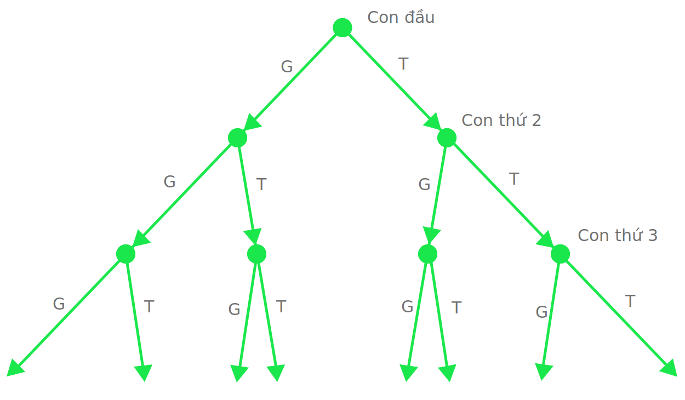
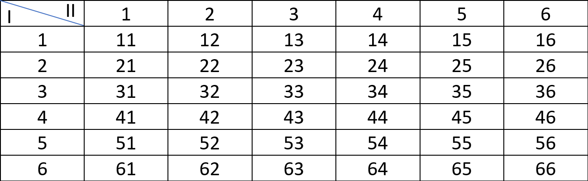

ĐỊNH NGHĨA CỔ ĐIỂN VỀ XÁC SUẤT
GIỚI THIỆU
Trong bài học trước chúng ta đã tìm hiểu về khái niệm xác suất của 1 biến cố là gì. Trong bài học này chúng ta sẽ tìm hiểu làm thế nào để tính được xác suất theo quan điểm cổ điển. Đã nói là cổ điển thì chắc hẳn là phải có những quan điểm khác hiện đại hơn (và thật sự là có) nhưng tại sao ta lại không học những quan điểm mới hơn mà lại phải học theo quan điểm cổ điển để làm gì?
Xác suất theo quan điểm cổ điển là nền móng cho các loại xác suất hiện đại khác nên chúng ta cần phải có "móng" thật tốt trước đã rồi mới học những thứ khác được. Với lại thông qua xác suất cổ điển này thì các bạn có thể hiểu tại sao phải có thêm các loại xác suất khác.
OK giới thiệu thế đủ rồi. Bắt đầu thôi!
ĐỊNH NGHĨA
Không gì tốt hơn là cho 1 ví dụ. Giả sử ta thực hiện 1 phép thử là tung 1 con xúc xắc đều đặn và đồng chất. Gọi A là biến cố "Xuất hiện mặt chẵn chấm". Ta cần phải xác định xác suất xảy ra của biến cố A.
Khi tung 1 con xúc xắc đều đặn và đồng chất, ta thấy có các trường hợp sau có thể xảy ra: xuất hiện mặt 1 chấm, xuất hiện mặt 2 chấm,..., xuất hiện mặt 6 chấm. Những trường hợp này đều thỏa mãn 2 điều kiện:
- Chúng là duy nhất. Tức là trong kết quả của phép thử chỉ có thể xảy ra một và chỉ một trong các trường hợp đó.
- Những trường hợp trên có khả năng xảy ra là như nhau.
Trong số 6 kết cục duy nhất đồng khả năng đó ta thấy chỉ có 3 kết cục nếu xảy ra thì biến cố A sẽ xảy ra là: xuất hiện mặt 2 chấm, 4 chấm và 6 chấm. Những kết cục làm cho biến cố xảy ra được gọi là kết cục thuận lợi cho biến cố.
Như vậy khi nhìn một cách trực quan ta có thể thấy khả năng xảy ra của biến cố A là 3/6 tức là 1/2. Và đó cũng chính là định nghĩa cổ điển của xác suất.
Định nghĩa: Xác suất xuất hiện biến cố A là tỉ số giữa số kết cục
thuận
lợi cho A và tổng số kết cục duy nhất đồng khả năng khi thực hiện phép thử.
Nếu ký hiệu P(A) là xác suất xuất hiện biến cố A, m số kết cục thuận lợi
cho biến
cố A, n số kết cục duy nhất đồng khả năng khi thực hiện phép thử, ta có công thức sau:

TÍNH CHẤT CỦA XÁC SUẤT
Từ định nghĩa cổ điển, ta có thể suy ra những tính chất sau đây:
- Xác suất của 1 biến cố ngẫu nhiên là 1 số dương năm trong khoảng tử 0 tới 1: 0 < P(A) < 1
- Xác suất của biến cố chắc chắn bằng 1: P(U) = 1
- Xác suất của biến cố không thể có bằng 0: P(V) = 0
**Lưu ý: đối với 2 tính chất sau cùng thì mệnh đề đảo của chúng chưa chắc là đúng . Tức là xác suất của 1 biến cố bằng 1 thì chưa chắc đã là biến cố chắn chắn và nếu xác suất bằng 0 thì cũng chưa chắc đã là biến cố không thể có.
CÁC PHƯƠNG PHÁP TÍNH XÁC SUẤT BẰNG ĐỊNH NGHĨA CỔ ĐIỂN
-
Phương pháp suy luận trực tiếp:
Nếu số kết cục trong phép thử là khó nhỏ và dễ tính toán thì việc suy đoán là khá đơn giản
nên ta có thể dùng phương pháp suy luận trực tiếp.
Ví dụ: Trong hộp có a bi trắng, b bi đen. Chọn ngẫu nhiên 1 viên bi trong hộp. Xác suất chọn được bi trắng là bao nhiêu?
Giải: Gọi A là biến cố "Lấy được bi màu trắng". Khi thực hiện việc chọn ngẫu nhiên 1 viên bi trong hộp ta có thể chọn trúng bất kỳ viên nào trong a + b viên. Do vậy số kết cục duy nhất đồng khả năng n = a + b. Trong đó nếu muốn biến cố A xuất hiện thì kết quả của phép thử phải là 1 trong a viên bi trắng, tức m = a. Vậy xác suất để chọn được viên bi màu trắng 1 cách ngẫu nhiên là P(A) = m / n = a / (a + b). -
Phương pháp dùng sơ đồ Venn: khi số kết cục là khá lớn và việc suy đoán
phức tạp hơn thì ta có thể dùng sơ đồ Venn để hình dung, biểu diễn các kết cục.
-
Sơ đồ hình cây
Ví dụ: một gia đình có 3 con. Giả sử xác suất sinh con trai và con gái là như nhau. Tính xác suất gia đình đó có 2 con gái.

Giải: gọi A là biến cố gia đình có 2 con gái. Số kết cục đồng khả năng có thể suy ra từ sơ đồ Venn. Như tổng số ta thấy có 8 kết cục duy nhất đồng khả năng: GGG, GGT, GTG, GTT, TGG, TGT, TTG, TTT. Trong đó có 3 kết cục thuận lợi cho biến cố là: GGT, GTG, TGG. Vậy xác suất để gia đình có 3 con gái là: P(A) = 3 / 8. -
Sơ đồ dạng bảng
Ví dụ: tung 1 con xúc xắc đều đặn, đồng chất 2 lần. Tính xác suất để trong đó có 1 lần xuất hiện mặt 6 chấm.
Giải: gọi A là biến cố có xuất hiện mặt 6 chấm trong 2 lần tung. Số kết cục duy nhất đồng khả năng được thể hiện trong bảng sau:

Vậy ta có số kết cục duy nhất đồng khả năng là 36, số kết cục thuận lợi là 10. Vậy xác suất xuất hiện biến cố A là: P(A) = 10 / 36 = 5 / 18.
-
Sơ đồ hình cây